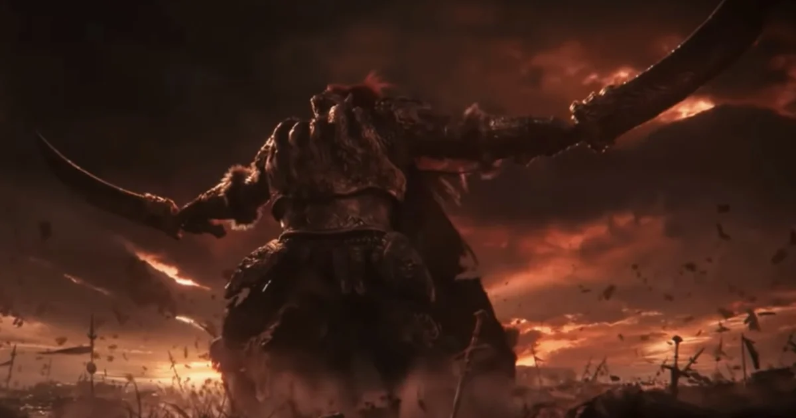
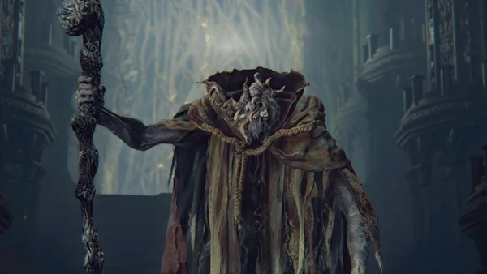
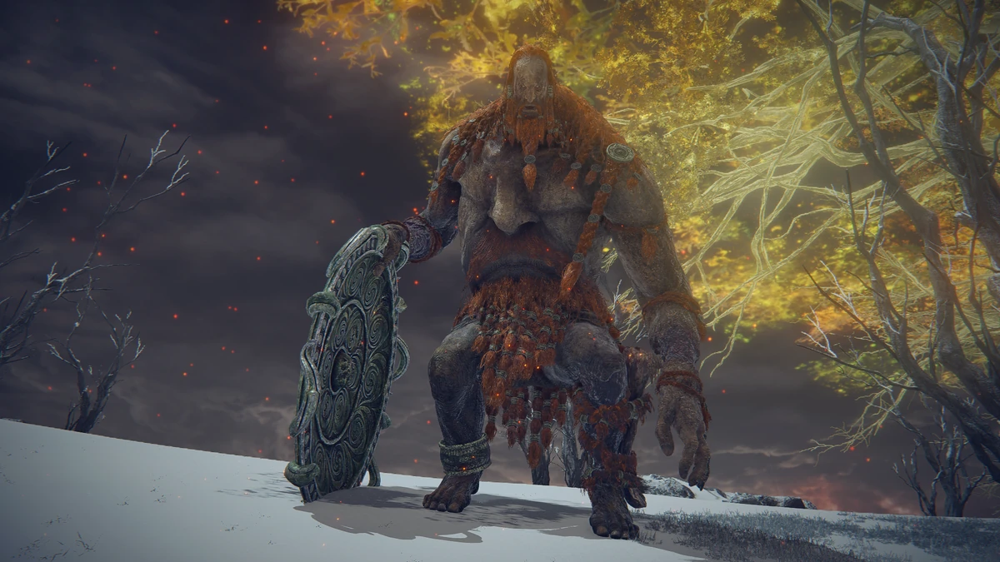
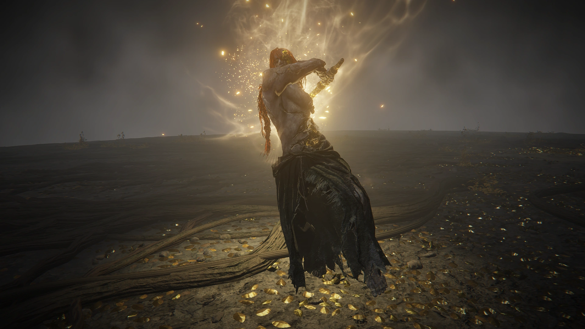

On this page there will be information on the remembrance bosses of Elden Ring
Boss Information
Godrick the Grafted
Godrick the Grafted is the first remembrance boss that you should fight. Godrick is located at the end of Stormveil Castle near the Secluded Cell site of grace. Stormveil Castle is a legacy dungeon located in Limgrave
Godrick is strong against holy damage and weak to, standard, slash, strike and pierce damage, Godrick has 6,080 HP. Godrick drops 20,000 runes, Godrick's Great Rune, Remembrance of the Grafted
The Remembrance of the Grafted can be used to make the Axe of Godrick or the Grafted Dragon. The remembrance can also be used to gain 20,000 runes

Rennala Queen of the Full Moon
Rennala Queen of the Full Moon is another early remembrance boss. Rennal will have to be fought to unlock the respec feature, respecing is changing the players stats or looks, it cost a Larval tear. Rennala is located at the end of Raya Lucaria Academy near the Debate Parlor site of grace. Raya Lucaria Academy is a legacy dungeon located in Liurnia of the Lakes.
Rennal is strong against magic damage and all status effects. Rennall is weak to standard, slash and pierce damage. Rennala has 3,493 HP. Rennala drops 40,000 runes, Great Rune of the Unborn and the Remembrance of the Full Moon Queen.
The Rememberance of the Full Moon Queen can be used to make the Rennala's Full Moon spell or the Carian Regal Scepter. The remembrance can be used to gain 20,000 runes

Starscourge Radahn
Starscourge Radahn is another early remembrance boss however this boss is on a more difficult than the previous two. Radahn is located at the end of Redmane Castle near the Chamber Outside the Plaza site of grace, Redmane Castle is a legacy dungeon located in Caelid.
Radahn is strong against holy damage and sleep status effect. Radahn is weak against pierce damage and the scarlot rot status effect. Radahn has 9,572 HP. Radahn drops 70,000 runes, Radahn's Great Rune and the Remembrance of the Starscourge.
The Rememberance of the Starscourge can be used to make the Starscourge Greatsword or the Lion Greatbow. The remembrance can also be used to gain 40,000 runes.

Morgott, the Omen King
Morgott, the Omen King is mid game remembrance boss. Morgott can only be fought by having two Great runes. Morgott is located in Leyndell, Royal Capital near the Queen's Bedchamber site of grace. Leyndell, Royal Capital is a location in Altus Plateau
Morgott is strong against holy damage and sleep status effect. Morgott is weak against slash and lighting damage. Morgott has 10,399 HP. Morgott drops 120,000 runes, Morgott's Great Rune and the Rememberance of the Omen King.
The Rememberance of the Omen King can be used to make Morgott's Cursed sword or the Regal Omen Bairn, the remembrance can also be used to gain 30,000 runes.

Fire Giant
Fire Giant is a late game remembrance boss. Fire Giant is located in Flame Peak near the Foot of the Forge site of grace. Flame Peak is located in the Mountaintops of the Giants.
Fire Giant is strong against fire damage and the frostbite status effect. Fire Giant is weak against slash damage. Fire Giant has 42,363 HP. Fire Giant drops 180,000 runes and the Remembrance of the Fire Giant.
The Rememberance of the Fire Giant can be used to make the Giant's Red Braide or the Burn, O Flame! spell, the remembrance can also be used to gain 30,000 runes.

Maliketh, the Black Blade
Maliketh, the Black Blade is a late game remembrance boss. Maliketh is located at the end of Crumbling Farum Azula near the Beside the Great Bridge site of grace.
Maliketh is strong against holy damage and the sleep status effect. Maliketh is weak against standard, slash, strike and pierce damage. Maliketh has 10,620 HP. Maliketh drops 220,000 runes and the Remembrance of the Black Blade.
The Rememberance of the Black Blade can be used to make Maliketh's Black Blade and the Black Blade Incantation spell, the remembrance can also be used to gain 30,000 runes.

Godfrey, First Elden Lord
Godfrey, First Elden Lord is a late game remembrance boss. Godfrey is located in Leyndell, Ashen Capital near the Queen's Bedchamber site of grace. Leyndell, Ashen Capital replaces Leyndell, Royal Capital when the player kills Maliketh.
Godfrey is strong against holy damage and the sleep status effect(phase 2). Godfrey is weak against pierce and lighting damage(phase 1) slash damage(phase 2). Godfrey has 21,903 HP. Godfrey drops 300,000 runes and the Remembrance of Hoarah Loux
The Rememberance of Hoarah Loux can be used to make the Axe of Godfrey or the Ash of War: Hoarah Loux's Earthshaker, the remembrance can also be used to gain 30,000 runes.

Radagon of the Golden Order
Radagon of the Golden Order is one of two final bosses. Radagon is located in Stone Platfrom near The Elden Throne site of grace.
Radagon is strong against holy damage and frostbite, scarlot rot and poison status effects and is immune to hemorrhage and sleep status effect. Radagon is weak to fire damage. Radagon has 13,339 HP. Radagon drops nothing

Elden Beast
Elden beast is the second final boss of the game. Elden Beast is located in the Elden Throne near the Elden Throne site of grace. To fight the Elden Beast you have to defeat Radagon however if you lose to the Elden Beast you have to fight Radagon again.
Elden Beast is stron against holy damage. Elden Beast is weak to standard, slash, strike and pierce damage. Elden Beast has 22,127 HP. Elden Beast drops 500,000 runes and the Elden Rememberance.
The Elden Rememberance can be used to make Marika's Hammer or the Sacred Relic Sword. The remembrance can also be used to gain 50,000 runes
If the Elden Beast is defeated the player is given the choice to go into New Game + which makes the enemy's harder and the bosses more difficult.